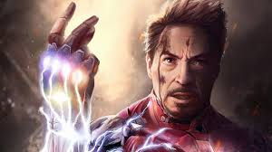

In 2018, when Thanos and the Black Order invaded Earth in their conquest to acquire the six Infinity Stones,
Stark, Doctor Strange, and Spider-Man convened to battle Thanos on Titan with the help of the Guardians of the
Galaxy. When Stark was held at Thanos' mercy, Doctor Strange surrendered the Time Stone for Stark's life. After
the Snap, Stark and Nebula remained the sole survivors on Titan. Stark and Nebula used the Benatar to escape
Titan, but were stranded in space as the ship was damaged. They were rescued by Captain Marvel, who brought them
back to Earth.
In the five years after the Snap, Stark chose to retire from being Iron Man, marrying Potts and having a
daughter, Morgan. When Stark devised a method to safely travel through time and space, he rejoined the Avengers
in their mission to acquire the six Infinity Stones from the past in order to resurrect those killed by the
Snap, and traveled back in time to retrieve the Scepter and regain the Tesseract. During the Battle of Earth,
Stark sacrificed himself to eliminate an alternate version of Thanos and his army, who traveled through time to
collect their Infinity Stones, saving the universe from destruction and leaving behind a legacy as one of
Earth's most revered superheroes.
paragraph's info is from iron man wiki
!
my favorit movie secene
This scene from the movie is when tony stark is showing off his jerico missile to his buyers and in my opinin
this is the best scene beacause it is very cool and shows how cool tony can be and also i think it is funny that
his own missile causes him to have to deel with the arck reactor in his chest.
 This scene from the movie is when tony stark is showing off his jerico missile to his buyers and in my opinin
this is the best scene beacause it is very cool and shows how cool tony can be and also i think it is funny that
his own missile causes him to have to deel with the arck reactor in his chest.
This scene from the movie is when tony stark is showing off his jerico missile to his buyers and in my opinin
this is the best scene beacause it is very cool and shows how cool tony can be and also i think it is funny that
his own missile causes him to have to deel with the arck reactor in his chest.